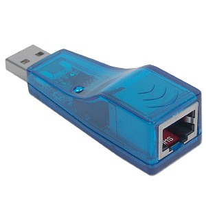

|
Nov 16, 2012
|
Дано: ноутбук который смотрит в ИнтернетНадо: получить Интернет на другом компе (компах) через этот ноутВ ноутбук вставляем еще одну сетевую карту, например такую:
В итоге у нас в ноуте eth0 это Интернет, eth1 это локалка. Для eth1
делаем например такие настройки ip 10.0.0.100 mask 24. Я делал через
networkmanager.
Дальше соединяем eth1 ноута с компом из локалки или со свичом. На компе из
локалки делаем следующие настройки (для Ubuntu в
/etc/network/interfaces):
iface eth0 inet static
# ip компа
address 10.0.0.15
netmask 255.255.255.0
# шлюз наш ноут
gateway 10.0.0.100
# днс'ы от гула фор фри, в версиях раньше 12.04 надо править /etc/resolv.conf
dns-nameservers 8.8.8.8 8.8.4.4
auto eth0
Я не сетевик и не админ и не фанатею за сети, поэтому здесь описывается самый
примитивный способ, как это заставить работать за 4мин18сек. В продакшине эту
схему конечно нельзя использовать (наверно), для этого нужно пользоваться
настройками фаервола и NAT.
Дальше устанавливаем на ноуте firestarter:
$ apt-get install firestarter
eth0 как внешний интерфейс и eth1 как$ ping uralbash.ru
PING uralbash.ru (216.239.36.21) 56(84) bytes of data.
64 bytes from any-in-2415.1e100.net (216.239.36.21): icmp_req=1 ttl=44 time=59.4 ms
64 bytes from any-in-2415.1e100.net (216.239.36.21): icmp_req=2 ttl=44 time=51.6 ms
64 bytes from any-in-2415.1e100.net (216.239.36.21): icmp_req=3 ttl=44 time=50.9 ms
64 bytes from any-in-2415.1e100.net (216.239.36.21): icmp_req=4 ttl=44 time=50.0 ms
64 bytes from any-in-2415.1e100.net (216.239.36.21): icmp_req=5 ttl=44 time=51.4 ms
64 bytes from any-in-2415.1e100.net (216.239.36.21): icmp_req=6 ttl=44 time=52.5 ms
64 bytes from any-in-2415.1e100.net (216.239.36.21): icmp_req=7 ttl=44 time=52.3 ms
64 bytes from any-in-2415.1e100.net (216.239.36.21): icmp_req=8 ttl=44 time=51.1 ms
^C
--- uralbash.ru ping statistics ---
8 packets transmitted, 8 received, 0% packet loss, time 7008ms
rtt min/avg/max/mdev = 50.083/52.444/59.403/2.733 ms